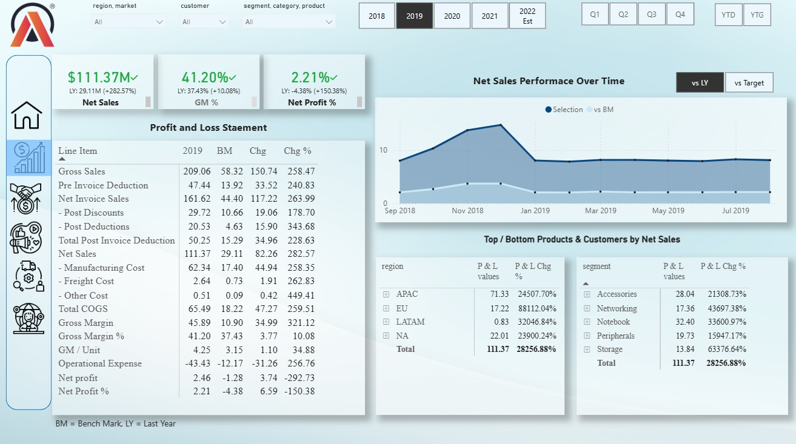
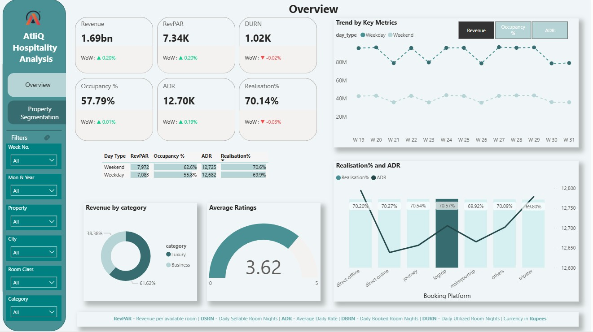
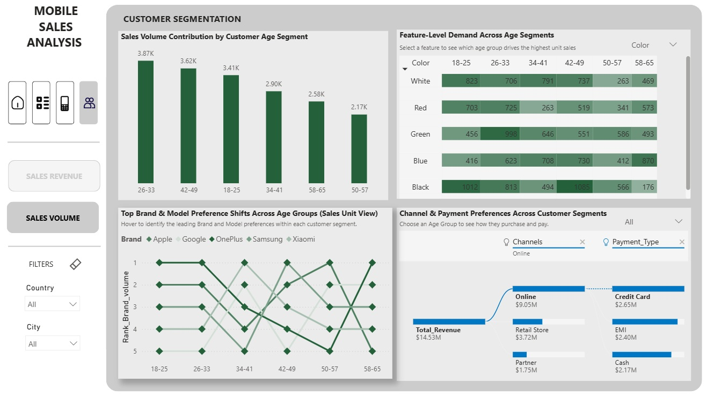
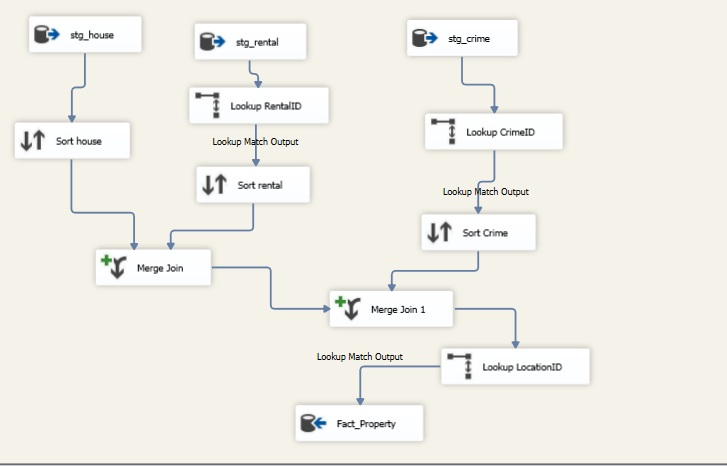
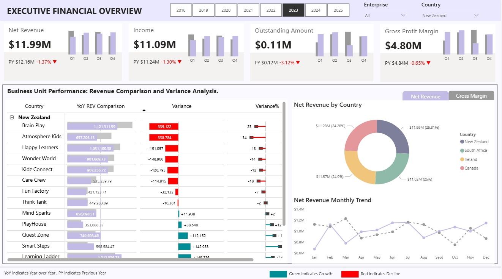

Business Insights 360
- End-to-end KPI reporting (Revenue, Gross Margin, Profitability)
- Customer & market-level profitability analysis
- P&L trend analysis and margin recovery insights
- Executive decision dashboard for cross-functional teams
I build scalable data solutions using SQL, Power BI, and ETL pipelines. Transforming messy data into clear insights.
Experienced in data modeling, automation, and executive dashboards that help teams track performance, identify opportunities, and make confident business decisions.





I’m a Data Analyst focused on building scalable analytics solutions using Power BI, SQL, and ETL tools. My work includes designing clean star-schema data models, developing automated ETL pipelines, and creating executive dashboards that simplify decision-making for business users.
After returning to tech following a career break, I invested deeply in upskilling through hands-on projects, structured learning, and real-world BI experience at MVP Studio. I enjoy transforming messy, inconsistent data into reliable insights that support financial, operational, and performance analysis.
My Key Capabilities
My Approach to Data
Clean data, clear visuals, and the satisfaction of building data models and dashboards that are both reliable and easy for teams to use.
Looking for someone who can turn messy data into meaningful insights? Let’s connect.
Email: gomathilatha.j@gmail.com